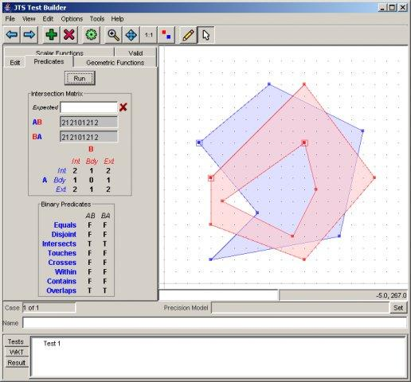

JTS¶
A JTS a térbeli predikátumok és függvények nyílt forráskódú könyvtára geometriai adatok feldolgozására. A 2-dimenziós síkon a lineáris geometriai számítások alapvető algoritmusainak teljes, konzisztens és robusztus implementációját biztosítja.
A JTS tartalmazza a „JTS Test Builder”-t, melynek segítségével a felhasználó egy interaktív felhasználói felületet használhat a tesztek futtatására és a kísérletezésre. A JTS stabilitását egy kiterjedt teszt készlet biztosítja.
A JTS-t a legtöbb java alapú nyílt forráskódú térinformatikai alkalmazás használja, a GEOS, mely a JTS egy C++ átírása, melyet a legtöbb C alapú alkalmazás használ. További átírások érhetők el C# és JavaScript nyelvekhez.
{kind=link}
Alapfunkciók¶
Geometriai modell (pont, vonal, terület)
Geometriai műveletek (pl., metszet, unió, beleesés, stb.)
Pontosság kezelés
Geometriai szerkezetek
Metrikus függvények (pl., 2D távolság, Hausdorff távolság)
Térbeli algoritmusok (pl. övezet generálás, vonal eltolás, vonal egyszerűsítés)
Geometriai matematikai függvények (pl. szögek, távolságok, stb.)
Térbeli struktúrák (pl. négyes-fa és R-fa, Delauney háromszögek)
Input/Output (pl., WKT, GML)
High-precision arithmetic
Támogatott formátumok¶
Well Known Text (WKT) és Well Known Binary (WKB)
GML 2
Java Swing/AWT writing
Implementált szabványok¶
OGC Simple Features for SQL (SFSQL)
Részletek¶
Honlap: https://projects.eclipse.org/projects/locationtech.jts
Licenc: LGPL
Támogatott platformok: Windows, Linux, Mac
API Interfészek: Java